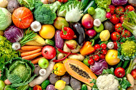
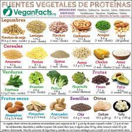
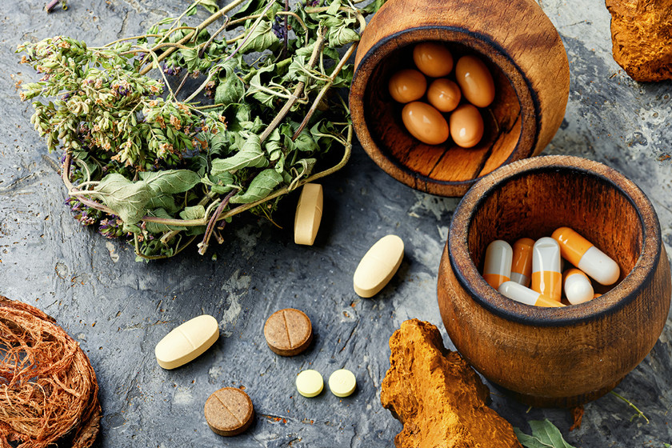

Consejos para una Dieta Vegana
Cómo Mantener una Dieta Balanceada

Incluye una variedad de vegetales

Asegúrate de obtener suficiente proteína

Considera suplementos si es necesario
Para mantener una dieta vegana balanceada, es fundamental incluir una variedad de vegetales en tu alimentación, asegurarte de obtener suficiente proteína de fuentes vegetales, y considerar suplementos si es necesario. También es importante mantenerse bien hidratado para apoyar la salud general.